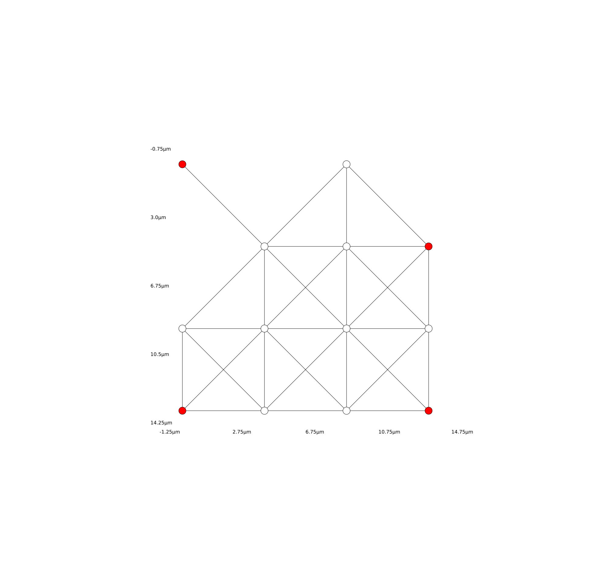
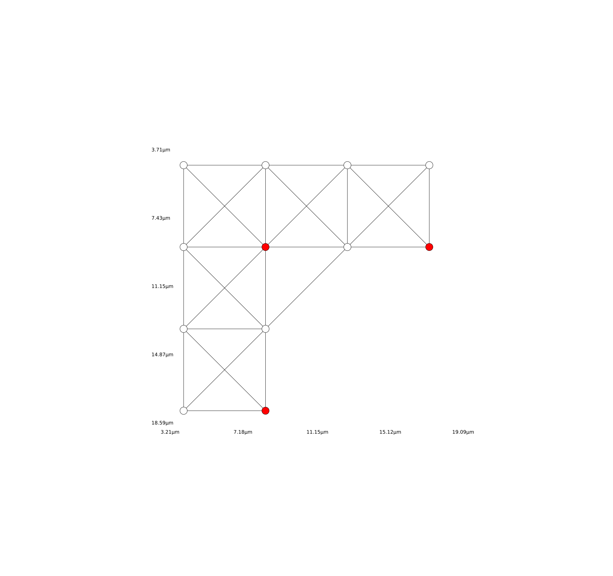

The Maximum Independent Set Problem
Background
In graph theory, an independent set is a set of vertices in a graph such that no two of which are connected by an edge. The problem of finding Maximum Independent Sets (MISs) is NP-hard, i.e., it is unlikely to be solved in a time polynomial to the problem size. Interestingly, there is a natural connection between the independent set constraint, and the Rydberg Blockade phenomenon in neutral-atom quantum computing using Rydberg states. More specifically, the Rydberg blockade implies that two atoms cannot be both excited to the Rydberg state $\Ket{r}$ if they are close to each other, whereas the independent set constraint means two vertices cannot be both in the independent set when they are connected by an edge. Thus, one can consider atoms in the Rydberg state as vertices in an independent set. See the proposal in H. Pichler et al. (10.48550/arXiv.1808.10816) for more details.
In particular, one can use the ground state of the Rydberg Hamiltonian to encode the Maximum Independent Set problem, which is to find the largest independent set of a given graph. For a particular subclass of geometric graphs, the so-called unit disk graphs, the Rydberg Hamiltonian can encode the solution without any overhead in the number of qubits. In fact, an experimental demonstration of quantum optimization has been realized in solving the Maximum Independent Set problem on up to 289 qubits in S. Ebadi et al. (10.48550/arXiv.2202.09372).
In this tutorial, we show how to solve the MIS problem using Bloqade. We focus on a particular subclass of unit disk graphs defined as Diagonal-connected Unit-disk Grid Graphs (DUGG). This is the class of graphs studied in the demonstration experiment S. Ebadi et al. (10.48550/arXiv.2202.09372). Although these graphs have highly constrained topologies, finding its MISs is still NP-hard. Here, we show how to use variational quantum algorithms with Rydberg Hamiltonians to solve the MIS problem on these graphs. The tutorial here strongly resembles the setup in S. Ebadi et al. (10.48550/arXiv.2202.09372), with the limitation that Bloqade can only simulate a much smaller problem.
For more details on the functionalities supported by Bloqade in studying independent set problems, please refer to the Maximum Independent Set page in the Manual.
Let's start by importing the required libraries:
using Graphs
using Bloqade
using Random
using GenericTensorNetworks
using Optim
using PythonCall
plt = pyimport("matplotlib.pyplot");Setting Up the Problem
To begin, we create a $4 \times 4$ DUGG with 0.8 filling, by using the random_dropout function. Here, we choose the lattice constant $a$ to be 4.5 μm:
Random.seed!(2)
atoms = generate_sites(SquareLattice(), 4, 4; scale = 4.5) |> random_dropout(0.2)
Next, we set the blockade radius to be 7.5 μm, corresponding to a case where nearest neighbors and next-nearest neighbors (diagonal from the initial atom) are within the blockade radius. As we discussed in the Rydberg Blockade tutorial, only one Rydberg excitation is allowed within the blockade radius. To better illustrate this constraint, we plot the interactions of Rydberg atoms as a DUGG, where each edge corresponds to the blockade constraint given by the blockade radius:
Bloqade.plot(atoms, blockade_radius = 7.5)
Our goal is to find a maximum independent set of such a graph.
For comparison, we first use classical algorithms to calculate the MIS size here using the graph utilities in Bloqade, so that one can compare this exact result with the quantum algorithms. The exact MIS size and its degeneracy can be solved with the generic tensor network algorithm (J. Liu et al. (10.48550/arXiv.2205.03718)) in the package GenericTensorNetworks:
graph = BloqadeMIS.unit_disk_graph(atoms, 7.5)
mis_size_and_counting = GenericTensorNetworks.solve(IndependentSet(graph), CountingMax())[](4.0, 26.0)ₜThe solve function takes a graph instance and a solution space property as inputs, where the graph instance is generated by the unit_disk_graph function in the Bloqade submodule BloqadeMIS, and the solution space property is to count the number of maximum independent sets here. For this specific DUGG, we see that the MIS size is 4, and the number of possible Maximum Independent Sets is 26. In the following, we are going to show how to solve the independent set problem with both quantum adiabatic and variational algorithms.
The Adiabatic Approach
Here, we generalize the quantum adiabatic algorithm used in the Adiabatic Evolution tutorial to prepare ground states of the Rydberg Hamiltonian for this disordered lattice. We first construct the adiabatic pulse sequences for the Rabi frequency $\Omega$ and the detuning $\Delta$:
T_max = 0.6
Ω_max = 2π * 4
Ω = piecewise_linear(clocks = [0.0, 0.1, 0.5, T_max], values = [0.0, Ω_max, Ω_max, 0])
Δ_start = -2π * 13
Δ_end = 2π * 11
Δ = piecewise_linear(clocks = [0.0, 0.1, 0.5, T_max], values = [Δ_start, Δ_start, Δ_end, Δ_end])
fig, (ax1, ax2) = plt.subplots(ncols = 2, figsize = (12, 4))
Bloqade.plot!(ax1, Ω)
ax1.set_ylabel("Ω/2π (MHz)")
Bloqade.plot!(ax2, Δ)
ax2.set_ylabel("Δ/2π (MHz)")
fig
Here, the total time is fixed to T_max, the adiabatic evolution path is specified by the piecewise_linear function. The Rydberg blockade radius can be computed with
\[C_6 / R_b^6 \sim \sqrt{\Delta^2 + \Omega^2}\]
The default for $C_6=2π * 862690 \text{ MHz μm}^6$. For encoding the corresponding MIS problem at $\Omega = 0$, the detuning can be set around $2\pi \times 11$ MHz for a blockade radius of $7.5$ µm (see the parameters in S. Ebadi et al. (10.48550/arXiv.2202.09372)).
Next, we create the time-dependent Hamiltonian and simulate its time evolution by using the SchrodingerProblem solver:
hamiltonian = rydberg_h(atoms; Ω = Ω, Δ = Δ)
prob = SchrodingerProblem(zero_state(nqubits(hamiltonian)), T_max, hamiltonian)
emulate!(prob)SchrodingerProblem:
register info:
type: YaoArrayRegister.ArrayReg{2, ComplexF64, Matrix{ComplexF64}}
storage size: 8 bytes
time span (μs): (0.0, 0.6)
equation:
storage size: 1.688 MiB
expression:
nqubits: 13
+
├─ [+] ∑ 2π ⋅ 8.627e5.0/|x_i-x_j|^6 n_i n_j
├─ [+] Ω(t) ⋅ ∑ σ^x_i
└─ [-] Δ(t) ⋅ ∑ n_i
algorithm: DP8(stage_limiter! = trivial_limiter!, step_limiter! = trivial_limiter!, thread = static(false))
options:
save_everystep: false
save_start: false
save_on: false
dense: false
reltol: 1.0e-10
abstol: 1.0e-10
Finally, we can plot the most probable bitstrings by using the bitstring_hist function on the resulting register (quantum state):
bitstring_hist(prob.reg; nlargest = 20)
We can see that some of the most probable configurations indeed have an independent set size 4 by counting the number of ones in the bitstring. The correctness of the output can be verified by comparing it to the classical solution:
best_bit_strings = most_probable(prob.reg, 2)
all_optimal_configs = GenericTensorNetworks.solve(IndependentSet(graph), ConfigsMax())[]
@assert all(bs -> GenericTensorNetworks.StaticBitVector([bs...]) ∈ all_optimal_configs.c, best_bit_strings)We can also visualize these atoms and check them visually:
Bloqade.plot(atoms, blockade_radius = 7.5; colors = [iszero(b) ? "white" : "red" for b ∈ best_bit_strings[1]])
Bloqade.plot(atoms, blockade_radius = 7.5; colors = [iszero(b) ? "white" : "red" for b ∈ best_bit_strings[2]])
However, there are still some configurations that violate the blockade constraint, because the blockade interaction is not an ideal unit disk constraint (e.g. some bitstrings have a size 5). One can check whether the independence constraint is satisfied or not with the BloqadeMIS.is_independent_set function:
best5_bit_strings = most_probable(prob.reg, 3)
BloqadeMIS.is_independent_set.(best5_bit_strings, Ref(graph))3-element BitVector:
1
1
0This can happen when the Rydberg interaction is not very strong at the unit disk radius. See the Rydberg Blockade page for more detailed explanations on Rydberg blockade and its relation with the unit disk radius. One can perform some postprocessing by reducing the violated configurations to indendendent set configurations using the mis_postprocessing function. Please also refer to the paper S. Ebadi et al. (10.48550/arXiv.2202.09372)). for more detailed discussion on the postprocessing procedure.
fixed = mis_postprocessing(best5_bit_strings[3], graph)
BloqadeMIS.is_independent_set(fixed, graph)trueQAOA with Piecewise Constant Pulses
The QAOA (Quantum Approximate Optimization Algorithm) algorithm (E. Farhi, J. Goldstone, S. Gutmann (10.48550/arXiv.1411.4028)) is a hybrid quantum-classical algorithm. The classical part of the algorithm is an optimizer, which can be either a gradient-based or non-gradient-based one. For our specific problem, the corresponding quantum part is a neutral-atom quantum computer first evolving under the Rydberg Hamiltonian with parameterized pulse sequences and then being measured in the computational basis.
The standard definition of QAOA involves applying the problem (expressed as a cost function) Hamiltonian $C$ and the transverse field Hamiltonian $B$ alternately. Let $G=(V,E)$ be a graph. The cost Hamiltonian for an MIS problem can be defined as
\[C(G) = -\sum_{j\in V}^{n} w_j n_j^z + \infty \sum_{\langle j,k\rangle \in E}n_j^z n_k^z\]
where the first summation is proportional to the size of the independent set, and the second term enforces the independence constraints.
In a Rydberg Hamiltonian, the first term corresponds to the detuning $w_i = \Delta$. The second term contains an $\infty$, which corresponds to the Rydberg blockade term with its strength described as $V_{jk} = C_6/|\mathbf{x}_j - \mathbf{x}_k|^6$. As we can see, the Rydberg interaction is not a perfect independence constraint due to with finite blockade interaction and unwanted long-range interaction. Thus, postprocessing might be required using neutral-atom quantum computers to solve the MIS problem.
The transverse-field Hamiltonian corresponds to the Rabi term in the Rydberg Hamiltonian,
\[B = \sum_{j=1}^{n}\sigma_j^x + \infty \sum_{\langle j,k\rangle \in E}n_j^z n_k^z.\]
Note that the Rybderg interaction term is always on, in contrast to the standard QAOA protocol. For the convenience of the simulation, we use the expect function to get the averaged measurement outputs. On the actual quantum hardware, the expect should be replaced by measuring in the computational basis and obtaining the averaged number of Rydberg excitations as the loss function (also called objective function or cost function). One can then either use non-gradient-based optimizers to perform the optimization or finite-difference methods to obtain gradients of parameters.
Let us first set up a non-optimized pulse sequence for QAOA with step $p=3$:
durations = fill(0.1, 6)
clocks = [0, cumsum(durations)...]
Ω2 = piecewise_constant(; clocks = clocks, values = repeat([Ω_max, 0.0], 3))
Δ2 = piecewise_constant(; clocks = clocks, values = repeat([0.0, Δ_end], 3))
fig, (ax1, ax2) = plt.subplots(ncols = 2, figsize = (12, 4))
Bloqade.plot!(ax1, Ω2)
ax1.set_ylabel("Ω/2π (MHz)")
Bloqade.plot!(ax2, Δ2)
ax2.set_ylabel("Δ/2π (MHz)")
fig
The piecewise_constant pulses can be more accurately simulated with the KrylovEvolution solver. This time, we simulate the dynamics in the subspace generated by the blockade_subspace function, so that we do not need postprocessing anymore.
hamiltonian2 = rydberg_h(atoms; Ω = Ω2, Δ = Δ2)
nsites = length(atoms)
subspace = blockade_subspace(atoms, 7.5) # we run our simulation within the blockade subspace
prob2 = KrylovEvolution(zero_state(subspace), clocks, hamiltonian2)
emulate!(prob2);We defined the loss function as the negative of the mean MIS size, which corresponds to the expectation value of the SumOfN operator. Thus, we can calculate the average loss function after the time evolution:
loss_MIS(reg) = -rydberg_density_sum(reg)
loss_MIS(prob2.reg)-2.5628869128026825The output shows the negative mean independent set size. This is because we have flipped its sign since most optimizers are set to minimize the loss function. This loss is equivalent to the rydberg_density_sum loss function in the BloqadeMIS module. Alternative loss functions include the gibbs_loss and the independent_set_probabilities.
Here, the loss produced by the pulse sequence does not look very good. We can throw it into an optimizer and see if a classical optimizer can help. First, let us wrap up the above code into a loss function:
function loss_piecewise_constant(atoms::AtomList, x::AbstractVector{T}) where {T}
@assert length(x) % 2 == 0
Ω_max = 4 * 2π
Δ_end = 11 * 2π
p = length(x) ÷ 2
# detuning and rabi terms
durations = abs.(x) # the durations of each layer of the QAOA pulse take the optimizing vector x as their input
clocks = [0, cumsum(durations)...]
Ωs = piecewise_constant(; clocks = clocks, values = repeat(T[Ω_max, 0.0], p))
Δs = piecewise_constant(; clocks = clocks, values = repeat(T[0.0, Δ_end], p))
hamiltonian = rydberg_h(atoms; Ω = Ωs, Δ = Δs)
subspace = blockade_subspace(atoms, 7.5) # we run our simulation within the blockade subspace
prob = KrylovEvolution(zero_state(Complex{T}, subspace), clocks, hamiltonian)
emulate!(prob)
return -rydberg_density_sum(prob.reg), prob.reg
endloss_piecewise_constant (generic function with 1 method)Running the simulation in the subspace does not violate the independence constraints. If one uses fullspace simulation or runs it on the quantum computer, one may need to post-process the measured bitstrings to a get a correct measure of the loss if we do not set the blockade constraint. Related APIs include is_independent_set, num_mis_violation, and mis_postprocessing.
Let us check the loss function again using the initial point above:
x0 = durations
rydberg_density, reg1 = loss_piecewise_constant(atoms, x0)
rydberg_density-2.5628869128026825The most probable bitstrings are:
bitstring_hist(reg1; nlargest = 20)
We see that without optimization, many of these bitstrings are not the MIS solutions.
Let us now use the non-gradient-based optimizer NelderMead in the Optim package to optimize the loss function:
optresult = Optim.optimize(x -> loss_piecewise_constant(atoms, x)[1], x0)
rydberg_density_final, reg1_final = loss_piecewise_constant(atoms, optresult.minimizer)
rydberg_density_final-3.0965910260012155We see that the loss is indeed improved, but still not very good. This is likely because the optimization is trapped in a local minimum:
bitstring_hist(reg1_final; nlargest = 20)
This example shows that the performance of the algorithm very much depends on the parametrization of the pulse sequences, the initialization of the variational parameters, and the classical optimizers. See S. Ebadi et al. (10.48550/arXiv.2202.09372) for more in-depth comparison of different pulse parameterizations and tips on how to improve the performance.
In the example below, we show a better pulse parameterization using smoothened piecewise linear waveforms.
Smoothened Piecewise Linear Pulses
A smoothened piecewise linear waveform can be created by applying a Gaussian filter on a waveform created by the piecewise_linear function. For example:
pulse_piecewise_linear = piecewise_linear(clocks = [0.0, 0.05, 0.1, 0.5, 0.55, T_max], values = [0, 0, 0.4, 0.4, 0, 0]);
pulse_smooth = smooth(pulse_piecewise_linear; kernel_radius = 0.02);
fig, ax = plt.subplots()
Bloqade.plot!(ax, pulse_piecewise_linear)
Bloqade.plot!(ax, pulse_smooth)
ax.set_ylabel("strength")
ax.legend(["piecewise linear", "smoothened piecewise linear"], loc = "lower right")
fig
Here, the function smooth takes a kernel_radius keyword parameter as the Gaussian kernel parameter. With the new waveforms, we can define the loss function as follows:
function loss_piecewise_linear(atoms::AtomList, x::AbstractVector{T}) where {T}
@assert length(x) == 3
Ω_max = 4 * 2π
Δ_start = -13 * 2π
Δ_end = 11 * 2π
Δ0 = 11 * 2π
T_max = 0.6
# the strength of the detunings at each step takes the optimizing x as their input
Δs = smooth(
piecewise_linear(
clocks = T[0.0, 0.05, 0.2, 0.3, 0.4, 0.55, T_max],
values = T[Δ_start, Δ_start, Δ0*x[1], Δ0*x[2], Δ0*x[3], Δ_end, Δ_end],
);
kernel_radius = 0.02,
)
Ωs = smooth(
piecewise_linear(clocks = T[0.0, 0.05, 0.1, 0.5, 0.55, T_max], values = T[0, 0, Ω_max, Ω_max, 0, 0]);
kernel_radius = 0.02,
)
hamiltonian = rydberg_h(atoms; Ω = Ωs, Δ = Δs)
subspace = blockade_subspace(atoms, 7.5)
prob = SchrodingerProblem(zero_state(Complex{T}, subspace), T_max, hamiltonian)
emulate!(prob)
return -rydberg_density_sum(prob.reg), prob.reg, Δs
end
x0 = [0.1, 0.8, 0.8]; # initial point for the optimizationLet us check the loss function with smoothened waveform with the initial point:
Δ_start = -13 * 2π
Δ_end = 11 * 2π
Δ0 = 11 * 2π
T_max = 0.6
Δ_initial = piecewise_linear(
clocks = [0.0, 0.05, 0.2, 0.3, 0.4, 0.55, T_max],
values = [Δ_start, Δ_start, Δ0 * x0[1], Δ0 * x0[2], Δ0 * x0[3], Δ_end, Δ_end],
)
rydberg_density, reg2, Δ_initial_smooth = loss_piecewise_linear(atoms, x0)
rydberg_density-3.890385062164213and plot the smoothened waveform:
fig, ax = plt.subplots()
Bloqade.plot!(ax, Δ_initial)
Bloqade.plot!(ax, Δ_initial_smooth)
ax.set_ylabel("Δ/2π (MHz)")
ax.legend(["piecewise linear", "smoothened piecewise linear"], loc = "lower right")
fig
Let's plot the distribution:
bitstring_hist(reg2; nlargest = 20)
The performance of the algorithm is quite good. Again, let us use the NelderMead optimizer to optimize the loss function:
optresult = Optim.optimize(x -> loss_piecewise_linear(atoms, x)[1], x0)
rydberg_density_final, reg_final, Δ_final = loss_piecewise_linear(atoms, optresult.minimizer)
rydberg_density_final-3.974827326383817One can see the mean MIS size can be further improved to a value close to the size of the MIS, which means there is a substantial probability for measuring an MIS state.
bitstring_hist(reg_final; nlargest = 20)
We can also plot out the final optimized waveform for Δ and compare it with the initial waveform:
fig, ax = plt.subplots()
Bloqade.plot!(ax, Δ_initial_smooth)
Bloqade.plot!(ax, Δ_final)
ax.set_ylabel("Δ/2π (MHz)")
ax.legend(["initial", "optimized"], loc = "lower right")
fig
Applications in VLSI Chip Manufacturing
Background
The Maximum Independent Set (MIS) tutorial above described how to use Bloqade to computed the MIS on arbitrary unit disk graphs. In this tutorial, we will use the same algorithm but also show how to map a problem with real-world applications to a problem that can be solved with Bloqade's features.
Configurability is an approach to chip manufacturing in VLSI design. Ordinarily, copies of the entire chip and fabricated and on a wafer, the wafer is diced into chips using scribing corridors, and then faulty chips are marked and discarded. However, since the entire chip is being manufactured at once, this is wasteful because even if only a small portion of the chip is defective, it must be entirely discarded. According to F. Berman et al., "To use configurability, this process is changed somewhat. Special circuitry is added in the scribing corridors that enables adjacent chips to be connected. Then, after the wafer is tested, adjacent functional chips are connected into a group and the entire group is used as a single enlarged chip." In this way, even if a smaller chips becomes defective, the adjacent chips can be rewired so that they can still be used in the larger chip.
A natural problem that arises from this setup is the square packing problem. D. Hochbaum and W. Maass summarizes an example problem: "64K RAM chips, some of which may be defective, are available on a rectilinear grid placed on a silicon wafer. 2 x 2 arrays of such nondefective chips could be wired together to produce 256K RAM chips. In order to maximize yield, we want to pack a maximal number of such 2 X 2 arrays into the array of working chips on a wafer."
To solve this problem, let us start with the necessary imports:
using Bloqade
using GenericTensorNetworks
using GenericTensorNetworks: unit_disk_graph
using PythonCall
using Random
using Optim
plt = pyimport("matplotlib.pyplot");
patches = pyimport("matplotlib.patches");
np = pyimport("numpy")Python: <module 'numpy' from '/home/runner/work/Bloqade.jl/Bloqade.jl/examples/1.blockade/.CondaPkg/env/lib/python3.10/site-packages/numpy/__init__.py'>Setting up the Problem
We can visualize this problem as a grid of 64K RAM chips, where some of the grid cells are removed.
fig, ax = plt.subplots(figsize=(5, 5))
G = 5 # grid size (G x G)
defects = []
for i in range(1, G*G//15)
push!(defects, ((rand(Int)%G+10) % G, (rand(Int)%G + 10) % G))
end
ax.grid(visible=true)
plt.xticks(1:G)
plt.yticks(1:G)
grid = zeros((G, G))
function plot_defects(defects)
for (x, y) in defects
ax.add_patch(patches.Rectangle((x, y), 1, 1, color="red"))
grid[x+1, y+1] = 1
end
end
plot_defects(defects)
fig
Wherever there is a 2x2 grid of non-defective chips, these grid cells can be wired together. This potential grouping of chips can be visualized as a unit disk which overlaps with the four grid cells that are being wired together. For example, in the figure below, the four grid cells in the upper left corner could be wired together, so we would put a unit disk at (1, 9) with radius 1.
The code below shows the unit disk corresponding to every possible wiring. Overlapping unit disks represents two wirings which conflict with each other because they use the same chips. Our goal is to find the maximum number of non-conflicting wirings, i.e. the MIS.
circs::Vector{Tuple{Int64, Int64}} = []
Δ = [(0, 0) (0, 1) (1, 0) (1, 1)]
for x in 1:G-1
for y in 1:G-1
works = true
for (dx, dy) in Δ
if 1 ≤ x+dx ≤ G && 1 ≤ y + dy ≤ G
works &= grid[x+dx,y+dy]==0
end
end
if works
push!(circs, (x, y))
end
end
end
R_opt = sqrt(2sqrt(2))/2
for circ in circs
patch = patches.Circle(circ, R_opt, fill=false)
ax.add_patch(patch)
end
fig
We can now use Bloqade, transforming this problem (which is a type of Diagonal-connected Unit-disk Grid Graph (DUGG)) into a lattice of atoms. We want each atom to be positioned at the center of the unit disk and have a blockade radius of roughly 7.5 μm, reusing the methdology and values given in the "Setting Up the Problem" section of the tutorial above which enables atoms that exist diagonally from the initial atom to fall within the Blockade radius.
We will scale the position of the atoms so that we get the desired unit disk overlaps with a radius of 7.5 μm:
function scalePos(pos, scale)::Vector{Tuple{Float64, Float64}}
npos = []
for (x, y) in pos
push!(npos, (x*scale, y*scale))
end
return npos
end
R = 7.5
scale = 7.5/(2*R_opt)
atoms = AtomList(scalePos(circs, scale))
Bloqade.plot(atoms, blockade_radius = R)
We will first use classical algorithms to find the optimal solution to the problem:
unit_graph = unit_disk_graph(atoms, R)
configs = GenericTensorNetworks.solve(IndependentSet(unit_graph), ConfigsMax())[]
MIS_config = configs.c[1]01100000001001We can visualize the solution on the atom lattice:
Bloqade.plot(atoms, blockade_radius = R; colors = [iszero(b) ? "white" : "red" for b in MIS_config])
We can also visualize the solution on the chip grid:
function clear_circ()
for i in 1:5
for patch in ax.patches
try
patch.radius
patch.remove()
catch
print(patch)
end
end
end
end
clear_circ()
for (circ, used) in zip(circs, MIS_config)
if used == 1
patch = patches.Circle(circ, R_opt, fill=false)
ax.add_patch(patch)
end
end
fig
The Adiabatic Approach
Like with the Maximum Independent Set tutorial above, we can use an adiabatic algorithm to solve this problem. We can use the same pulse sequence for $\Omega$ and $\Delta$:
T_max = 0.6
Ω_max = 2π * 4
Ω = piecewise_linear(clocks = [0.0, 0.1, 0.5, T_max], values = [0.0, Ω_max, Ω_max, 0])
Δ_start = -2π * 13
Δ_end = 2π * 11
Δ = piecewise_linear(clocks = [0.0, 0.1, 0.5, T_max], values = [Δ_start, Δ_start, Δ_end, Δ_end])
plot, (ax1, ax2) = plt.subplots(ncols = 2, figsize = (12, 4))
Bloqade.plot!(ax1, Ω)
ax1.set_ylabel("Ω/2π (MHz)")
Bloqade.plot!(ax2, Δ)
ax2.set_ylabel("Δ/2π (MHz)")
plot
And construct the Hamiltonian:
hamiltonian = rydberg_h(atoms; Ω = Ω, Δ = Δ, ϕ=Waveform(t->0.0, T_max))
prob = SchrodingerProblem(zero_state(nqubits(hamiltonian)), T_max, hamiltonian)
emulate!(prob)SchrodingerProblem:
register info:
type: YaoArrayRegister.ArrayReg{2, ComplexF64, Matrix{ComplexF64}}
storage size: 8 bytes
time span (μs): (0.0, 0.6)
equation:
storage size: 5.500 MiB
expression:
nqubits: 14
+
├─ [+] ∑ 2π ⋅ 8.627e5.0/|x_i-x_j|^6 n_i n_j
├─ [+] Ω(t) ⋅∑ e^{ϕ(t) ⋅ im} |0⟩⟨1| + e^{-ϕ(t) ⋅ im} |1⟩⟨0|
└─ [-] Δ(t) ⋅ ∑ n_i
algorithm: DP8(stage_limiter! = trivial_limiter!, step_limiter! = trivial_limiter!, thread = static(false))
options:
save_everystep: false
save_start: false
save_on: false
dense: false
reltol: 1.0e-10
abstol: 1.0e-10
We can see that our algorithm found the Maximum Independent Set by summing the probabilities of being in any one of the MIS configurations:
function get_MIS_prob(reg::Union{ArrayReg, SubspaceArrayReg}, configs) # want to maxmimize this
prob = 0
x = [parse(Int, reverse(string(x)); base=2) for x in configs.c]
for (c, amp) in BloqadeMIS.ConfigAmplitude(reg)
if c in x
prob+=abs2(amp)
end
end
return prob
end
get_MIS_prob(prob.reg, configs)0.8652655503921888Optimization
For even better results, we can optimize the pulse sequence for $\Omega$ and $\Delta$. We can parametrize the pulses by $t_{start}$ and $t_{end}$, which are the times spent in the initial and final state, respectively. We will also optimize the shape on the detuning pulse by modeling it as a piecewise linear function given by parameters that indicate what values it reaches at regular time intervals. We will optimize for the probabilitity that of getting one the MIS solutions without applying any classical postprocessing on the results of the stimulation.
function get_waves(params::Vector{Float64}) # returns the pulses as a function of certain parameters
t_start, t_end, scale... = params
t_start+=0.03
T_max = 0.6
t_end = T_max - t_end - 0.03
t_interval = (t_end - t_start) / (length(scale) + 1)
Ω_max = 4 * 2π
Δ_start = -13 * 2π
Δ_end = Δ0 = 11 * 2π
Δ_clock = [0.0, t_start]
Δ_val = [Δ_start, Δ_start]
for i in 1:length(scale)
push!(Δ_val, Δ0*scale[i])
push!(Δ_clock, t_start + i*t_interval)
end
push!(Δ_val, Δ_end); push!(Δ_val, Δ_end)
push!(Δ_clock, t_end); push!(Δ_clock, T_max)
Δ = piecewise_linear(clocks = Δ_clock, values = Δ_val);
Ω = piecewise_linear(clocks = [0.0, t_start, t_end, T_max], values = [0, Ω_max, Ω_max, 0]);
return Ω, Δ
endget_waves (generic function with 1 method)The example below plots the pulse sequence that would be generated by the parameters given in x0:
function plot_waves(params::Vector{Float64})
Ω, Δ = get_waves(params)
graph, (ax1, ax2) = plt.subplots(ncols = 2, figsize = (12, 4))
Bloqade.plot!(ax1, Ω)
ax1.set_ylabel("Ω/2π (MHz)")
Bloqade.plot!(ax2, Δ)
ax2.set_ylabel("Δ/2π (MHz)")
return graph
end
x0 = [0.1, 0.1, 0.2, 0.3, 0.4, 0.5, 0.6, 0.7, 0.8]
plot_waves(x0)
We can now run the optimization using the Nelder-Mead algorithm
function loss(atoms::AtomList, x::Vector{Float64}, configs)
Ω, Δ = get_waves(x)
hamiltonian = rydberg_h(atoms; Ω = Ω, Δ = Δ)
subspace = blockade_subspace(atoms, 4.5)
prob = SchrodingerProblem(zero_state(subspace), T_max, hamiltonian)
emulate!(prob)
return -get_MIS_prob(prob.reg, configs), prob.reg, Δ
end
optresult = Optim.optimize(x -> loss(atoms, x, configs)[1], x0) * Status: success
* Candidate solution
Final objective value: -9.676880e-01
* Found with
Algorithm: Nelder-Mead
* Convergence measures
√(Σ(yᵢ-ȳ)²)/n ≤ 1.0e-08
* Work counters
Seconds run: 83 (vs limit Inf)
Iterations: 463
f(x) calls: 735
We can look at the new pulse sequence, which has a much better get_MIS_prob:
plot_waves(optresult.minimizer)
The new parameters give much better results when we rerun the adiabtic algorithm:
Ω, Δ = get_waves(optresult.minimizer)
hamiltonian = rydberg_h(atoms; Ω = Ω, Δ = Δ, ϕ=Waveform(t->0.0, T_max))
prob = SchrodingerProblem(zero_state(nqubits(hamiltonian)), T_max, hamiltonian)
emulate!(prob)
bitstring_hist(prob.reg; nlargest = 20)
This page was generated using Literate.jl.